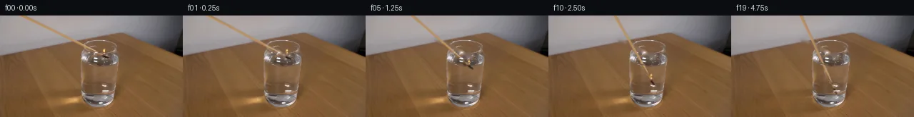

![首帧]()

Round 00
2026-11-05T11:13:09.739270+00:00像素候选变化代码 +383/−0inspection 更新
pixels dea514dcd7611e91 · code a3f1d372dddf48cd
查看本轮 generate.py 真实 diff
--- previous/generate.py
+++ current/generate.py
@@ -0,0 +1,383 @@
+"""PixelWorld continuation using only the supplied image and local pixel mathematics."""
+from pathlib import Path
+import os
+
+ROOT = Path(__file__).resolve().parent
+(ROOT / '.tmp').mkdir(exist_ok=True)
+os.environ['TMPDIR'] = str(ROOT / '.tmp')
+
+import json
+import shutil
+import numpy as np
+from PIL import Image, ImageDraw
+from scipy.ndimage import map_coordinates, gaussian_filter, binary_dilation
+from scipy.sparse import coo_matrix
+from scipy.sparse.linalg import spsolve
+from artifact_io import save
+
+H, W = 144, 256
+SOURCE = np.asarray(Image.open(ROOT / 'first_frame.png').convert('RGB'), dtype=np.uint8)
+assert SOURCE.shape == (H, W, 3)
+I = SOURCE.astype(np.float64)
+Y, X = np.mgrid[0:H, 0:W].astype(np.float64)
+P0 = np.array([147.0, 58.4])
+A0 = np.arctan2(1.0, 2.0)
+U0 = np.array([np.cos(A0), np.sin(A0)])
+N0 = np.array([-U0[1], U0[0]])
+SX = X - P0[0]
+SY = Y - P0[1]
+S = -(SX * U0[0] + SY * U0[1])
+N = SX * N0[0] + SY * N0[1]
+
+
+def smoothstep(a, b, v):
+ q = np.clip((v - a) / (b - a), 0.0, 1.0)
+ return q * q * (3.0 - 2.0 * q)
+
+
+def sample(array, xx, yy, order=1):
+ coordinates = np.array([yy, xx])
+ if array.ndim == 2:
+ return map_coordinates(array, coordinates, order=order, mode='constant', cval=0.0)
+ return np.stack([map_coordinates(array[..., c], coordinates, order=order,
+ mode='constant', cval=0.0)
+ for c in range(array.shape[2])], axis=-1)
+
+
+def harmonic_inpaint(image, mask):
+ """Discrete Laplace fill: source boundary pixels remain exactly unchanged."""
+ mask = np.asarray(mask, dtype=bool)
+ locations = np.argwhere(mask)
+ if not len(locations):
+ return image.copy()
+ lookup = np.full(mask.shape, -1, dtype=np.int32)
+ lookup[mask] = np.arange(len(locations))
+ rows, cols, coefficients = [], [], []
+ rhs = np.zeros((len(locations), 3), dtype=np.float64)
+ for k, (y, x) in enumerate(locations):
+ degree = 0
+ for dy, dx in [(-1, 0), (1, 0), (0, -1), (0, 1)]:
+ ny, nx = y + dy, x + dx
+ if 0 <= ny < H and 0 <= nx < W:
+ degree += 1
+ if mask[ny, nx]:
+ rows.append(k); cols.append(int(lookup[ny, nx])); coefficients.append(-1.0)
+ else:
+ rhs[k] += image[ny, nx]
+ rows.append(k); cols.append(k); coefficients.append(float(degree))
+ matrix = coo_matrix((coefficients, (rows, cols)), shape=(len(locations), len(locations))).tocsc()
+ result = image.copy()
+ result[mask] = spsolve(matrix, rhs)
+ return np.clip(result, 0, 255)
+
+
+# Thin measured shaft strip. Neutral white glass highlights are retained as fixed optics.
+shaft_region = (S > 3.4) & (S < 155.0) & (np.abs(N + 0.40) < 3.25)
+neutral_glass = ((X > 114) & (Y > 34) & (I[..., 0] - I[..., 1] < 21)
+ & (I[..., 1] - I[..., 2] < 19) & (I.max(axis=2) > 174))
+shaft_region &= ~neutral_glass
+head_q = ((S + 0.3) / 5.0) ** 2 + ((N - 0.05) / 2.45) ** 2
+head_region = (head_q < 1.0) & (Y > 54.5)
+flame_region = ((X >= 142) & (X <= 149) & (Y >= 46) & (Y <= 54)
+ & (I[..., 0] > 142) & (I[..., 0] - I[..., 1] > 30)
+ & (I[..., 1] - I[..., 2] > 20))
+# Inpaint a small support around the flame to eliminate its soft light edge.
+flame_fill = binary_dilation(flame_region, iterations=1) & (Y <= 54) & (X >= 142)
+object_fill = shaft_region | head_region | flame_fill
+B = harmonic_inpaint(I, object_fill)
… diff truncated; 296 more lines …